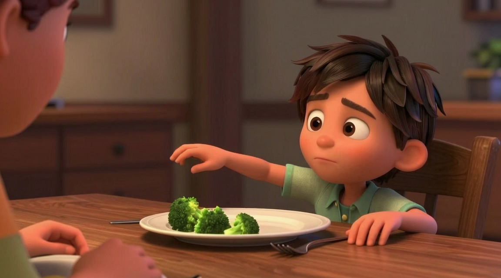

shot-02-kf-03 · 把 reluctant 与普通服从分开的那一帧。从“后靠”直接过渡到“握着叉子”，插值与视频模型都会生成一次平滑、正常的伸手，中途那半秒的停顿会被抹掉——而启动延迟正是不情愿的核心证据。身体没有跟上手



semantic readability: pendingstate fidelity: pendingcharacter consistency: pendingprop continuity: pendingcomposition: pending
Semantic purpose: 把 reluctant 与普通服从分开的那一帧。从“后靠”直接过渡到“握着叉子”，插值与视频模型都会生成一次平滑、正常的伸手，中途那半秒的停顿会被抹掉——而启动延迟正是不情愿的核心证据。身体没有跟上手，也让“只有手在配合”直接可见。
Visual state: The reach is halted mid-way. The child's right arm is extended roughly two thirds of the distance to the fork, hand open, hovering above the table without touching it. His torso has not come forward with the arm — he is still leaned back — and his gaze is still off the plate. The arm is the only thing that has moved.
Must show
- Hand stopped short of the fork and not touching it.
- Torso still back — the body has not committed to the action.
- Gaze still not on the plate.
Must avoid (→ FORBIDDEN OUTCOMES)
- The hand reaching for anything other than the fork.
- The hand recoiling backwards, which would read as refuse.
- A fast, confident reach with the body following it.